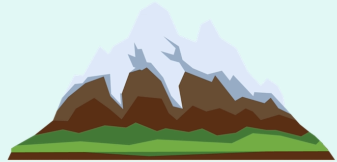

un webmarketer / chargé de projet digital.

Je m'appelle Benjamin, je suis actuellement demandeur d'emploi, et je cherche activement un poste comme Chargé de projet digital.
J'ai des expériences dans le webmarketing, d'abord dans les réseaux sociaux chez PROGRESS'SCION avant de passer chez BOURMAUD ÉQUIPEMENT où j'ai participé à la refonte du site internet et de la communication OnLine et OffLine de la marque.
J'ai développé 3 compétences clées sur ses expériences en entreprise comme:
# L'acquisition de trafics qualifiés notamment avec le référencement naturel (SEO) et la création de contenu.
# La création d'une marque sur internet avec la gestion et le développement sur les réseaux sociaux.
# Et la gestion de leads qualifiés sur une niche précise.
# La création ou la refonte de site web avec le CMS Wordpress.
# Etc...
J'ai comme projet de devenir un expert du marketing digital avec notamment la gestion des influenceurs et le développement d'une marque sur les réseaux sociaux.
C'est pour cette raison que des postes en marketing digital avec un axe fort sur le développement d'une marque sur les réseaux sociaux m'intéresse plus particulièrement.
Je souhaite évoluer dans un environnement favorisant mon développement professionnel dans le cadre d’une collaboration durable. Dans une entreprise qui sait me reconnaitre et m'accompagner dans mon parcours professionnel.
J'💚 le thé et manger beaucoup de cuisine sénégalaise fait par mes soins comme le Yassa poulet ou le mafé.
J'adore participer à la conception et au développement des solutions digitales sur mesure adaptées à tous types de services (Création et refonte de sites web responsive, applications mobiles et autres supports digitaux.)